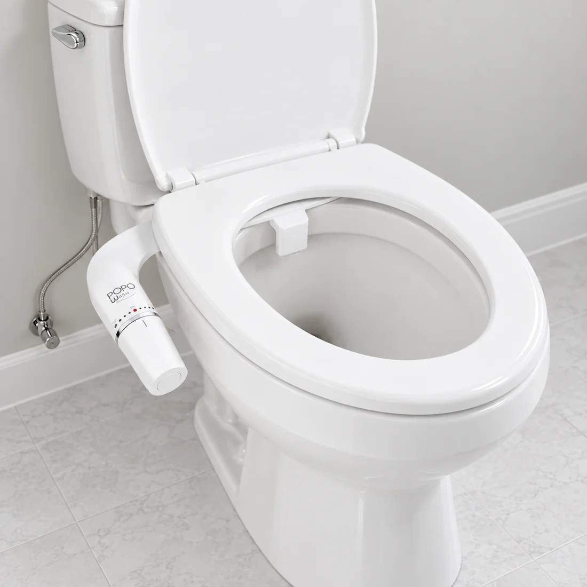
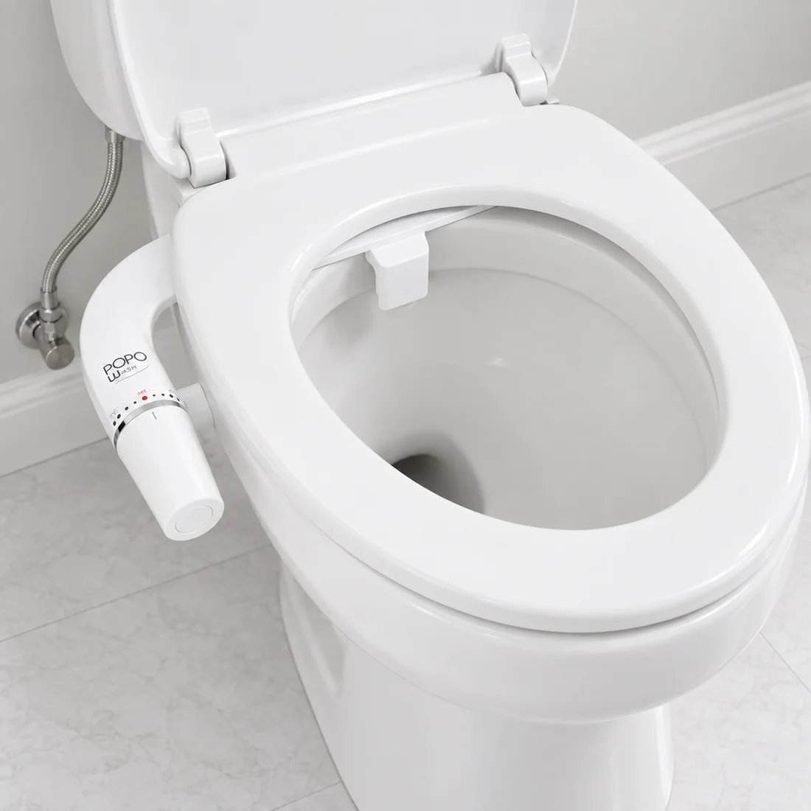
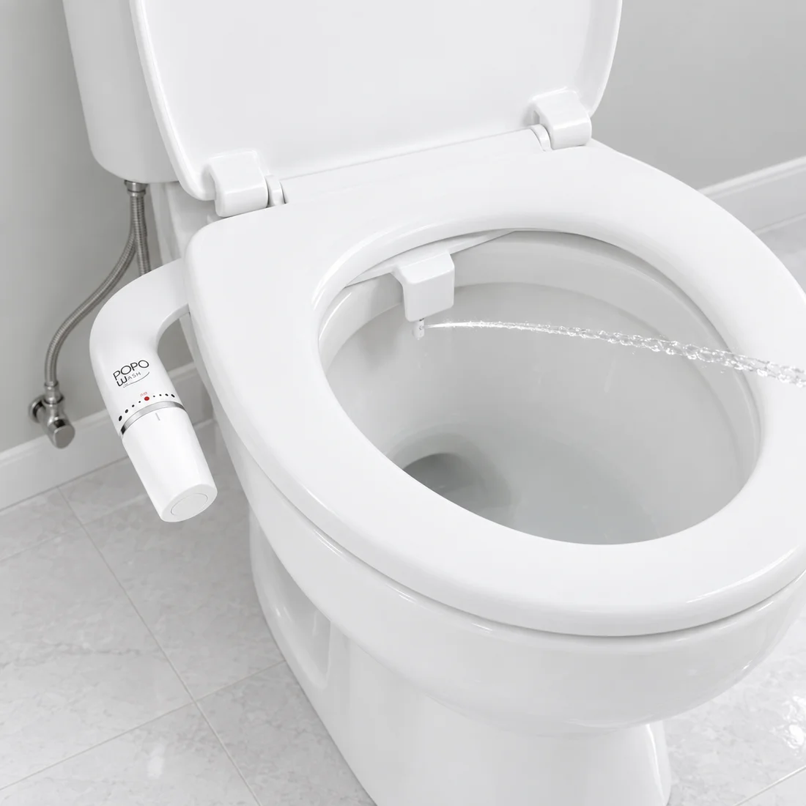
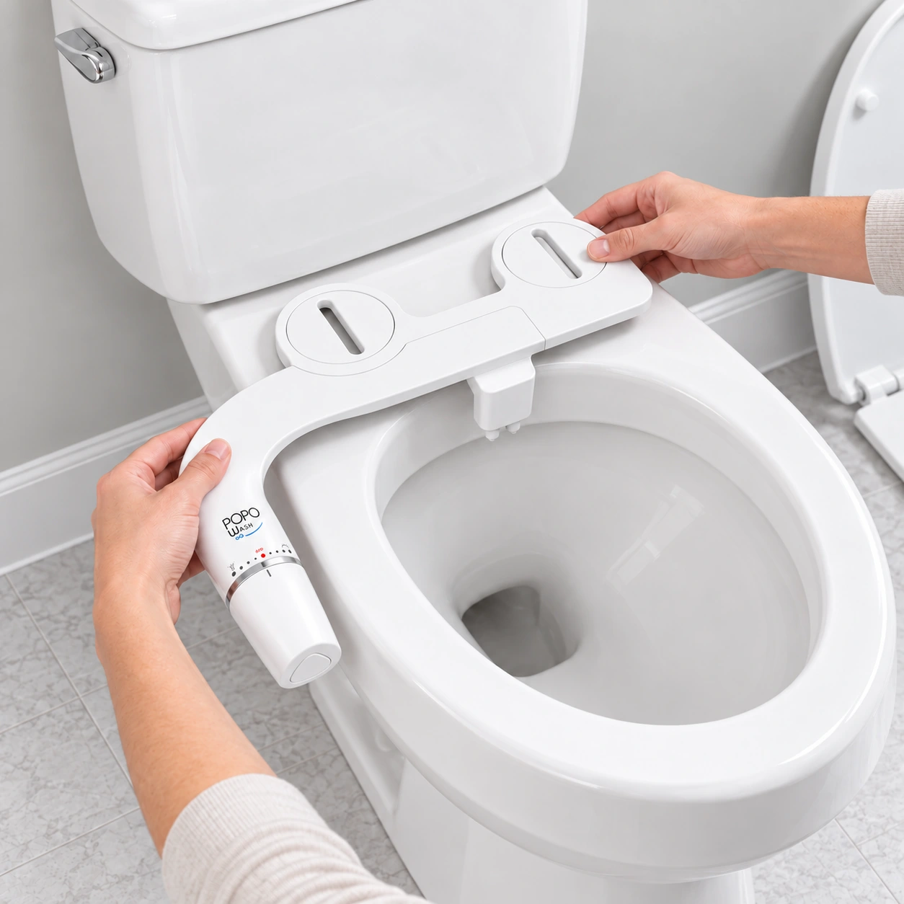

★★★★★
“Pensé que instalarlo iba a ser un cacho. Era mucho más simple.”
Instalación · Ejemplo de reseña
Dale agua a la rutina. Gira, regula y listo.
Sin pilas. Sin enchufes. Sin tanto rollo.
El papel retira. Frota. Lo intenta. PopoWash usa agua para dejarte con una sensación realmente más limpia y fresca.
Si no te limpiarías las manos solo con papel, ¿por qué haces lo mismo con tu poto?

“Pensé que instalarlo iba a ser un cacho. Era mucho más simple.”
Instalación · Ejemplo de reseña

“Girar la perilla y sentir la diferencia. No vuelvo al puro papel.”
Uso diario · Ejemplo de reseña

“Ahora el papel es para secarme. El rollo dura mucho más.”
Menos papel · Ejemplo de reseña
Bajo el asiento. Bajo tu control.
Sin pilas. Sin enchufes.
Cierra el agua y retira la tapa y el asiento. Coloca PopoWash debajo, vuelve a fijarlos y conecta el agua. Comprueba que no haya fugas.
Una perilla. Dos maneras de lavar.
Gírala suavemente y regula la presión a tu comodidad.
Agua dirigida para una sensación más limpia después de ir al baño.
Higiene íntima externa, especialmente para el cuidado femenino.
Vuelve la perilla a OFF y usa un poco de papel para secar. Listo para la próxima vez.
Paso 1 de 3

Video real de instalación pendiente.
Si quedaron huellas, no quedaste limpio.
Agua para lavar. Papel para secar.
Cuéntanos cuántos viven en casa y calcula cuánto podrías ahorrar en papel.
Resolvamos las dudas antes de girar la perilla.
Contenido por confirmar. La lista definitiva de piezas, conexiones y manual se publicará antes de habilitar compras.
PopoWash se fija bajo el asiento, usando sus anclajes. Debes poder desmontar la tapa y el asiento para colocarlo y volver a fijarlos. Si no se pueden desmontar, no se puede instalar.
No. Es un bidet mecánico que funciona con la presión de tu suministro de agua, sin pilas ni electricidad.
Cierra la llave de agua y retira la tapa y el asiento. Coloca PopoWash sobre los anclajes, vuelve a fijar la tapa y el asiento, y conecta el suministro de agua. Abre la llave lentamente y comprueba que no existan fugas.
Este modelo mecánico no calienta el agua. Usa el agua de la conexión a la que está instalado, a la temperatura del suministro.
No necesariamente. La idea es usar agua para lavar y una pequeña cantidad de papel para secar. El consumo final depende de tus hábitos.
PopoWash cuesta $39.990. La instalación opcional en Santiago tiene un costo adicional de $15.000. El despacho se calcula por separado; su cobertura, plazos, medios de pago y contenido definitivo de la caja se confirmarán antes de habilitar compras.
Más agua. Menos papel.
Una sensación de limpieza que se nota.
PopoWash · bidet mecánico
$39.990 CLP
Vista previa de compra. Pagos aún no habilitados.